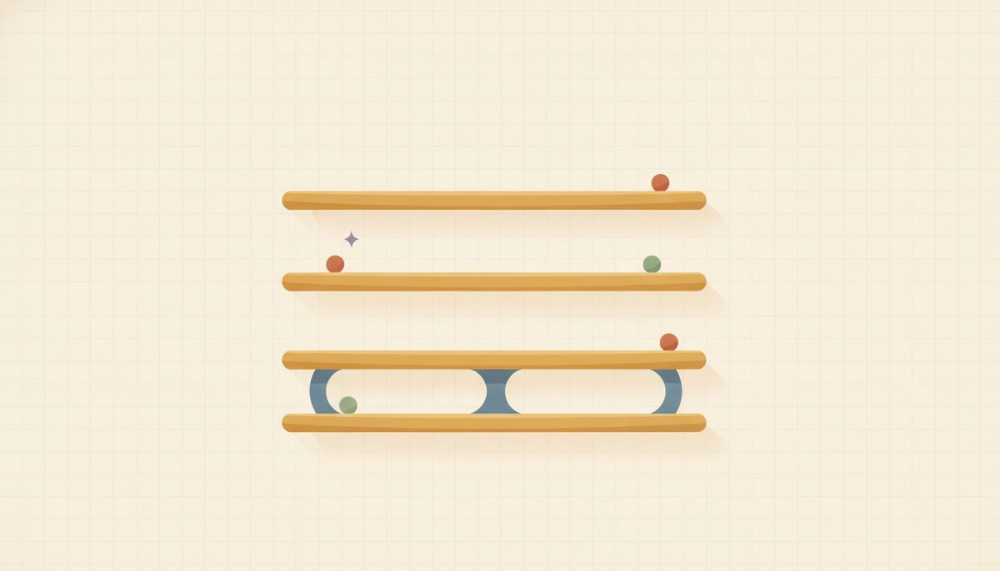
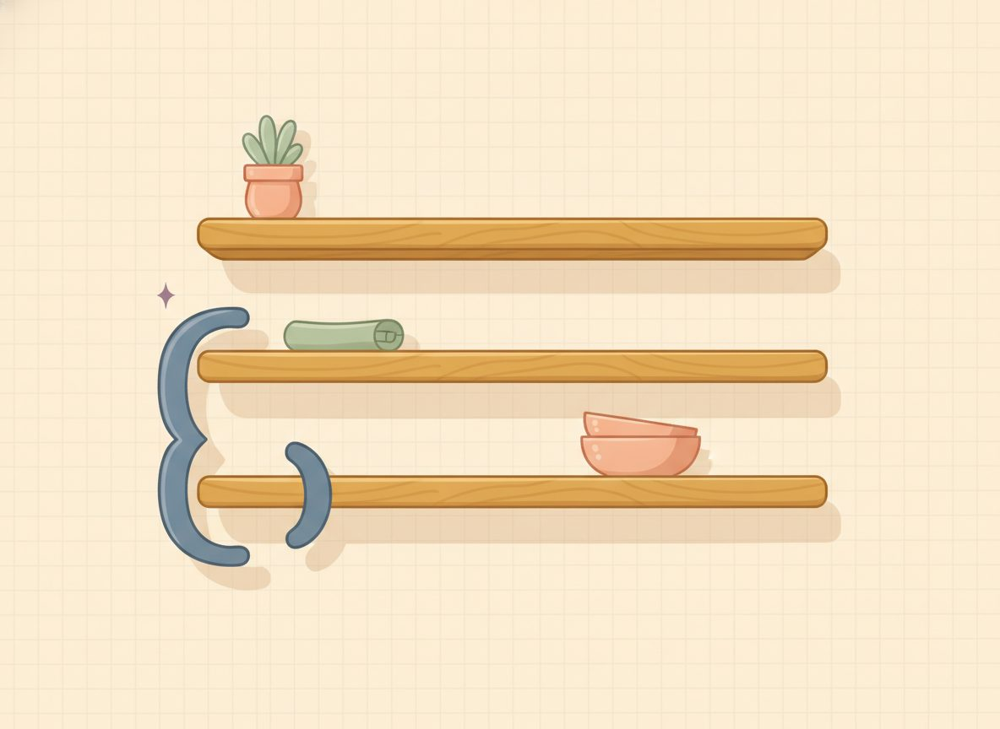

Order of operations

Read 2 + 3 × 4 two different ways and you get two different answers. Add first: 2 + 3 is 5, then 5 × 4 is 20. Multiply first: 3 × 4 is 12, then 2 + 12 is 14. Both used real arithmetic, but they can't both be right, because a written expression has to mean exactly one thing. So everyone agrees on one order to read it in, and that agreement is the order of operations.
Here's the order, top to bottom:
- Parentheses and other grouping symbols
- Exponents
- Multiply and divide, equally important, done left to right
- Add and subtract, equally important, done left to right

Within the bottom two lines you work in reading order, left to right, the way you read a sentence. Multiply and divide aren't ranked against each other; they're equal, so you just take them in the order they come. Same for add and subtract.
There's a short word that holds this whole order in your head: PEMDAS. It's a memory hook, one letter for each operation in the order you handle them. P is for Parentheses, E for Exponents, M for Multiplication, D for Division, A for Addition, and S for Subtraction. Say it once or twice and it sticks, and then the letters remind you what comes before what.
The one thing to know about PEMDAS is that the six letters aren't six separate steps. M and D are a single step, and so are A and S, exactly like the four-line list above. The clearest way to hold that is to stack the letters in four rows, one row per line of the list:
- P
- E
- MD
- AS
You read the rows top to bottom: parentheses first, then exponents, then the MD row, then the AS row. Inside the MD row, multiply and divide are equal, so you take them left to right; inside the AS row, add and subtract are equal, so you take those left to right too. Stacking it this way is what keeps PEMDAS from looking like six ranked steps, when it's really four.
Now watch the order work on the spots that trip people, reading each one left to right within its line:
- 12 ÷ 2 × 3. Divide and multiply are on the same line, so read left to right: 12 ÷ 2 is 6, then 6 × 3 is 18.
- 8 − 3 + 2. Subtract and add are on the same line too, so left to right again: 8 − 3 is 5, then 5 + 2 is 7.
- 2 × 3². Exponents come before multiplying, so square first: 3² is 9, then 2 × 9 is 18.
Grouping, the top line, can change the answer outright. Compare 2 + 3 × 4 = 14 with (2 + 3) × 4 = 20: same digits, but the parentheses force the addition first. Square brackets [ ] group exactly the way parentheses do.
And the fraction bar is a grouping symbol in disguise: in (12 − 2)/(3 + 2) the bar means "finish the whole top and the whole bottom first, then divide," giving 10/5, then 2.
New words
- 1.3.d1 Order of operations: the agreed sequence for evaluating an expression. PEMDAS, but really four tiers: Grouping symbols (parentheses, brackets [ ], and the fraction bar; the "P" tier), Exponents, [Multiply/Divide] (one tier, left to right), [Add/Subtract] (one tier, left to right). The "P" in PEMDAS is really grouping, not just round parentheses: a fraction bar groups too, meaning "evaluate the whole top and the whole bottom first, then divide."
Worked example
- 1.3.w1 2 + 3 × 4. Multiply comes before add, so do it first: 2 + 12, then add to get 14.
- 1.3.w2 (2 + 3) × 4. Grouping comes first, so the parentheses go first: 5 × 4, then 20.
- 1.3.w3 8 − 3 + 2. Subtract and add are equally important, so left to right: 8 − 3 is 5, then 5 + 2 = 7. Reading left to right is what keeps this from becoming 3.
- 1.3.w4 12 ÷ 2 × 3. Divide and multiply are equally important, so left to right: 12 ÷ 2 is 6, then 6 × 3 = 18. Not 2.
- 1.3.w5 2 + 3² × 2. Exponent first: 2 + 9 × 2; then multiply: 2 + 18; then add to get 20.
- 1.3.w6 10 − 2 × (3 + 1). Grouping first: 10 − 2 × 4; then multiply: 10 − 8; then subtract to get 2.
- 1.3.w7 (12 − 2)/(3 + 2). The fraction bar groups, so finish top and bottom before dividing: 10/5, then 2.
One clean case to get the order moving: 18 ÷ 3 + 3. Divide comes before add, so divide first: 18 ÷ 3 is 6, then 6 + 3 = 9. One higher step, then the addition.
When two operations are equally important, the only question to ask is: reading left to right, which comes first? That single question handles every same-line case.
Check yourself
- 1.3.c1 Without computing all the way, in 20 ÷ 4 × 2, which operation happens first, and why? (The ÷, because divide and multiply are equally important and ÷ is further left; so 20 ÷ 4 is 5, then 5 × 2 = 10.)
- 1.3.c2 Why does 2 × 3² come out to 18, not 36? (The exponent comes before the multiply, so 3² = 9 happens first, then 2 × 9 = 18; multiplying first would be taking the steps out of order.)
- 1.3.c3 Put parentheses into 2 + 3 × 4 to make it equal 20. (Group the addition: (2 + 3) × 4 = 5 × 4 = 20.)
You can now read an expression as four tiers instead of six steps, handle multiply/divide and add/subtract as left-to-right ties, and treat parentheses, brackets, and the fraction bar as the grouping that goes first.
A set that jumps between tiers asks more of you than a row of look-alikes, and that extra effort is the part that sticks. Every answer is at the end of the lesson, and any one of these maps back to a worked example above if it stalls you.
Reveal answerHide to problem 1
11Reveal answerHide to problem 2
21Reveal answerHide to problem 3
7Reveal answerHide to problem 4
10Reveal answerHide to problem 5
19Reveal answerHide to problem 6
18Reveal answerHide to problem 7
16Reveal answerHide to problem 8
9Reveal answerHide to problem 9
6Reveal answerHide to problem 10
3Reveal answerHide to problem 11
9Reveal answerHide to problem 12
26(In 3, 4, and 10, watch the left-to-right rule within a tier; in 6, square before you multiply; 12 pulls all four tiers together.)